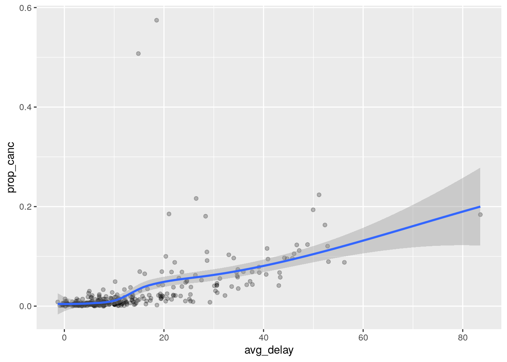

Last updated: 2019-09-26
Checks: 7 0
Knit directory: wflow-r4ds/
This reproducible R Markdown analysis was created with workflowr (version 1.4.0). The Checks tab describes the reproducibility checks that were applied when the results were created. The Past versions tab lists the development history.
Great! Since the R Markdown file has been committed to the Git repository, you know the exact version of the code that produced these results.
Great job! The global environment was empty. Objects defined in the global environment can affect the analysis in your R Markdown file in unknown ways. For reproduciblity it’s best to always run the code in an empty environment.
The command set.seed(20190925) was run prior to running the code in the R Markdown file. Setting a seed ensures that any results that rely on randomness, e.g. subsampling or permutations, are reproducible.
Great job! Recording the operating system, R version, and package versions is critical for reproducibility.
Nice! There were no cached chunks for this analysis, so you can be confident that you successfully produced the results during this run.
Great job! Using relative paths to the files within your workflowr project makes it easier to run your code on other machines.
Great! You are using Git for version control. Tracking code development and connecting the code version to the results is critical for reproducibility. The version displayed above was the version of the Git repository at the time these results were generated.
Note that you need to be careful to ensure that all relevant files for the analysis have been committed to Git prior to generating the results (you can use wflow_publish or wflow_git_commit). workflowr only checks the R Markdown file, but you know if there are other scripts or data files that it depends on. Below is the status of the Git repository when the results were generated:
Ignored files:
Ignored: .Rhistory
Ignored: .Rproj.user/
Note that any generated files, e.g. HTML, png, CSS, etc., are not included in this status report because it is ok for generated content to have uncommitted changes.
These are the previous versions of the R Markdown and HTML files. If you’ve configured a remote Git repository (see ?wflow_git_remote), click on the hyperlinks in the table below to view them.
| File | Version | Author | Date | Message |
|---|---|---|---|---|
| Rmd | 3b94f62 | John Blischak | 2019-09-26 | R is not C! ^ is exponentiation, not ‘exclusive or’ |
| html | 332efa0 | John Blischak | 2019-09-26 | Build site. |
| Rmd | ace5f59 | John Blischak | 2019-09-26 | more dplyr exercises |
| html | 2eac6e6 | John Blischak | 2019-09-26 | Build site. |
| Rmd | 5f7de6b | John Blischak | 2019-09-26 | Start chp 3 exercises on dplyr |
library(nycflights13)
library(tidyverse)── Attaching packages ──────────────────────────────────────────────────────────────────────────────────── tidyverse 1.2.1 ──✔ ggplot2 3.2.1 ✔ purrr 0.3.2
✔ tibble 2.1.3 ✔ dplyr 0.8.3
✔ tidyr 1.0.0 ✔ stringr 1.4.0
✔ readr 1.3.1 ✔ forcats 0.4.0── Conflicts ─────────────────────────────────────────────────────────────────────────────────────── tidyverse_conflicts() ──
✖ dplyr::filter() masks stats::filter()
✖ dplyr::lag() masks stats::lag()filter()p. 49
Find all flights that
Had an arrival delay of two or more hours
filter(flights, arr_delay > 2 * 60)# A tibble: 10,034 x 19
year month day dep_time sched_dep_time dep_delay arr_time
<int> <int> <int> <int> <int> <dbl> <int>
1 2013 1 1 811 630 101 1047
2 2013 1 1 848 1835 853 1001
3 2013 1 1 957 733 144 1056
4 2013 1 1 1114 900 134 1447
5 2013 1 1 1505 1310 115 1638
6 2013 1 1 1525 1340 105 1831
7 2013 1 1 1549 1445 64 1912
8 2013 1 1 1558 1359 119 1718
9 2013 1 1 1732 1630 62 2028
10 2013 1 1 1803 1620 103 2008
# … with 10,024 more rows, and 12 more variables: sched_arr_time <int>,
# arr_delay <dbl>, carrier <chr>, flight <int>, tailnum <chr>,
# origin <chr>, dest <chr>, air_time <dbl>, distance <dbl>, hour <dbl>,
# minute <dbl>, time_hour <dttm>Flew to Houston (
IAHorHOU)
filter(flights, dest == "IAH" | dest == "HOU")# A tibble: 9,313 x 19
year month day dep_time sched_dep_time dep_delay arr_time
<int> <int> <int> <int> <int> <dbl> <int>
1 2013 1 1 517 515 2 830
2 2013 1 1 533 529 4 850
3 2013 1 1 623 627 -4 933
4 2013 1 1 728 732 -4 1041
5 2013 1 1 739 739 0 1104
6 2013 1 1 908 908 0 1228
7 2013 1 1 1028 1026 2 1350
8 2013 1 1 1044 1045 -1 1352
9 2013 1 1 1114 900 134 1447
10 2013 1 1 1205 1200 5 1503
# … with 9,303 more rows, and 12 more variables: sched_arr_time <int>,
# arr_delay <dbl>, carrier <chr>, flight <int>, tailnum <chr>,
# origin <chr>, dest <chr>, air_time <dbl>, distance <dbl>, hour <dbl>,
# minute <dbl>, time_hour <dttm>Were operated by United, American, or Delta
filter(flights, carrier %in% c("UA", "AA", "DL"))# A tibble: 139,504 x 19
year month day dep_time sched_dep_time dep_delay arr_time
<int> <int> <int> <int> <int> <dbl> <int>
1 2013 1 1 517 515 2 830
2 2013 1 1 533 529 4 850
3 2013 1 1 542 540 2 923
4 2013 1 1 554 600 -6 812
5 2013 1 1 554 558 -4 740
6 2013 1 1 558 600 -2 753
7 2013 1 1 558 600 -2 924
8 2013 1 1 558 600 -2 923
9 2013 1 1 559 600 -1 941
10 2013 1 1 559 600 -1 854
# … with 139,494 more rows, and 12 more variables: sched_arr_time <int>,
# arr_delay <dbl>, carrier <chr>, flight <int>, tailnum <chr>,
# origin <chr>, dest <chr>, air_time <dbl>, distance <dbl>, hour <dbl>,
# minute <dbl>, time_hour <dttm>Departed in summer (July, August, and September)
filter(flights, month %in% 7:9)# A tibble: 86,326 x 19
year month day dep_time sched_dep_time dep_delay arr_time
<int> <int> <int> <int> <int> <dbl> <int>
1 2013 7 1 1 2029 212 236
2 2013 7 1 2 2359 3 344
3 2013 7 1 29 2245 104 151
4 2013 7 1 43 2130 193 322
5 2013 7 1 44 2150 174 300
6 2013 7 1 46 2051 235 304
7 2013 7 1 48 2001 287 308
8 2013 7 1 58 2155 183 335
9 2013 7 1 100 2146 194 327
10 2013 7 1 100 2245 135 337
# … with 86,316 more rows, and 12 more variables: sched_arr_time <int>,
# arr_delay <dbl>, carrier <chr>, flight <int>, tailnum <chr>,
# origin <chr>, dest <chr>, air_time <dbl>, distance <dbl>, hour <dbl>,
# minute <dbl>, time_hour <dttm>Arrived more than two hours late, but didn’t leave late
filter(flights, arr_delay > 2 * 60, dep_delay <=0)# A tibble: 29 x 19
year month day dep_time sched_dep_time dep_delay arr_time
<int> <int> <int> <int> <int> <dbl> <int>
1 2013 1 27 1419 1420 -1 1754
2 2013 10 7 1350 1350 0 1736
3 2013 10 7 1357 1359 -2 1858
4 2013 10 16 657 700 -3 1258
5 2013 11 1 658 700 -2 1329
6 2013 3 18 1844 1847 -3 39
7 2013 4 17 1635 1640 -5 2049
8 2013 4 18 558 600 -2 1149
9 2013 4 18 655 700 -5 1213
10 2013 5 22 1827 1830 -3 2217
# … with 19 more rows, and 12 more variables: sched_arr_time <int>,
# arr_delay <dbl>, carrier <chr>, flight <int>, tailnum <chr>,
# origin <chr>, dest <chr>, air_time <dbl>, distance <dbl>, hour <dbl>,
# minute <dbl>, time_hour <dttm>Were delayed by at least an hour, but made up over 30 minutes in flight
filter(flights, dep_delay >= 60, arr_delay < 30)# A tibble: 206 x 19
year month day dep_time sched_dep_time dep_delay arr_time
<int> <int> <int> <int> <int> <dbl> <int>
1 2013 1 3 1850 1745 65 2148
2 2013 1 3 1950 1845 65 2228
3 2013 1 3 2015 1915 60 2135
4 2013 1 6 1019 900 79 1558
5 2013 1 7 1543 1430 73 1758
6 2013 1 11 1020 920 60 1311
7 2013 1 12 1706 1600 66 1949
8 2013 1 12 1953 1845 68 2154
9 2013 1 19 1456 1355 61 1636
10 2013 1 21 1531 1430 61 1843
# … with 196 more rows, and 12 more variables: sched_arr_time <int>,
# arr_delay <dbl>, carrier <chr>, flight <int>, tailnum <chr>,
# origin <chr>, dest <chr>, air_time <dbl>, distance <dbl>, hour <dbl>,
# minute <dbl>, time_hour <dttm>Departed between midnight and 6am (inclusive)
filter(flights, hour <= 6)# A tibble: 27,905 x 19
year month day dep_time sched_dep_time dep_delay arr_time
<int> <int> <int> <int> <int> <dbl> <int>
1 2013 1 1 517 515 2 830
2 2013 1 1 533 529 4 850
3 2013 1 1 542 540 2 923
4 2013 1 1 544 545 -1 1004
5 2013 1 1 554 600 -6 812
6 2013 1 1 554 558 -4 740
7 2013 1 1 555 600 -5 913
8 2013 1 1 557 600 -3 709
9 2013 1 1 557 600 -3 838
10 2013 1 1 558 600 -2 753
# … with 27,895 more rows, and 12 more variables: sched_arr_time <int>,
# arr_delay <dbl>, carrier <chr>, flight <int>, tailnum <chr>,
# origin <chr>, dest <chr>, air_time <dbl>, distance <dbl>, hour <dbl>,
# minute <dbl>, time_hour <dttm>Another useful dplyr filtering helper is
between(). What does it do? Can you use it to simplify the code needed to answer the previous challenges?
between() selects numeric values between a minimum and maximum value (inclusive).
While I think between() is useful, I don’t find these examples very compelling.
filter(flights, between(month, 7, 9))# A tibble: 86,326 x 19
year month day dep_time sched_dep_time dep_delay arr_time
<int> <int> <int> <int> <int> <dbl> <int>
1 2013 7 1 1 2029 212 236
2 2013 7 1 2 2359 3 344
3 2013 7 1 29 2245 104 151
4 2013 7 1 43 2130 193 322
5 2013 7 1 44 2150 174 300
6 2013 7 1 46 2051 235 304
7 2013 7 1 48 2001 287 308
8 2013 7 1 58 2155 183 335
9 2013 7 1 100 2146 194 327
10 2013 7 1 100 2245 135 337
# … with 86,316 more rows, and 12 more variables: sched_arr_time <int>,
# arr_delay <dbl>, carrier <chr>, flight <int>, tailnum <chr>,
# origin <chr>, dest <chr>, air_time <dbl>, distance <dbl>, hour <dbl>,
# minute <dbl>, time_hour <dttm>filter(flights, between(hour, 0, 6))# A tibble: 27,905 x 19
year month day dep_time sched_dep_time dep_delay arr_time
<int> <int> <int> <int> <int> <dbl> <int>
1 2013 1 1 517 515 2 830
2 2013 1 1 533 529 4 850
3 2013 1 1 542 540 2 923
4 2013 1 1 544 545 -1 1004
5 2013 1 1 554 600 -6 812
6 2013 1 1 554 558 -4 740
7 2013 1 1 555 600 -5 913
8 2013 1 1 557 600 -3 709
9 2013 1 1 557 600 -3 838
10 2013 1 1 558 600 -2 753
# … with 27,895 more rows, and 12 more variables: sched_arr_time <int>,
# arr_delay <dbl>, carrier <chr>, flight <int>, tailnum <chr>,
# origin <chr>, dest <chr>, air_time <dbl>, distance <dbl>, hour <dbl>,
# minute <dbl>, time_hour <dttm>How many flights have a missing
dep_time? What other variables are missing? What might these rows represent?
filter(flights, is.na(dep_time))# A tibble: 8,255 x 19
year month day dep_time sched_dep_time dep_delay arr_time
<int> <int> <int> <int> <int> <dbl> <int>
1 2013 1 1 NA 1630 NA NA
2 2013 1 1 NA 1935 NA NA
3 2013 1 1 NA 1500 NA NA
4 2013 1 1 NA 600 NA NA
5 2013 1 2 NA 1540 NA NA
6 2013 1 2 NA 1620 NA NA
7 2013 1 2 NA 1355 NA NA
8 2013 1 2 NA 1420 NA NA
9 2013 1 2 NA 1321 NA NA
10 2013 1 2 NA 1545 NA NA
# … with 8,245 more rows, and 12 more variables: sched_arr_time <int>,
# arr_delay <dbl>, carrier <chr>, flight <int>, tailnum <chr>,
# origin <chr>, dest <chr>, air_time <dbl>, distance <dbl>, hour <dbl>,
# minute <dbl>, time_hour <dttm>I assume these are cancelled flights since all columns relating to departure and arrival times are missing.
Why is
NA ^ 0not missing? Why isNA | TRUEnot missing? Why isFALSE & NAnot missing? Can you figure out the general rule? (NA * 0is a tricky counterexample!)
NA ^ 0 # same as NA ^ FALSE[1] 1NA | TRUE[1] TRUEFALSE & NA[1] FALSENA * 0[1] NAI think the NA | TRUE and FALSE & NA make sense. They are short-circuitng the logic. For an “or” statement, a TRUE on one of the sides is sufficient to render the entire statement true, regardless if the other data is missing. Vice verse for the “and”: a FALSE on either side is sufficient to make the entire statement false.
# have to be TRUE
NA | TRUE[1] TRUETRUE | NA[1] TRUE# ambiguous
NA | FALSE[1] NAFALSE | NA[1] NA# have to be TRUE
NA & FALSE[1] FALSEFALSE & NA[1] FALSE# ambiguous
NA & TRUE[1] NATRUE & NA[1] NAThe exponentiation logic also makes less sense to me. Any number raised to the 0th power is equal to 1. Furthermore, 1 raised to any power is also 1. From the docs for ?Arithmetic:
1 ^ y and y ^ 0 are 1, always.
NA ^ 0[1] 11 ^ NA[1] 1Thus the general rule seems to be to allow NA if the missing value would not affect the outcome of the logic or arithmetic operation.
Thus I’m not sure why NA * 0 returns NA when it should be 0 no matter the value. My only guess is that it may be related to the potential risk of division by zero.
NA * 0[1] NA0 / NA[1] NANA / NA * 0[1] NAarrange()p. 51
How could you use
arrange()to sort all missing values to the start? (Hint: useis.na()).
arrange(flights, desc(is.na(dep_time)))# A tibble: 336,776 x 19
year month day dep_time sched_dep_time dep_delay arr_time
<int> <int> <int> <int> <int> <dbl> <int>
1 2013 1 1 NA 1630 NA NA
2 2013 1 1 NA 1935 NA NA
3 2013 1 1 NA 1500 NA NA
4 2013 1 1 NA 600 NA NA
5 2013 1 2 NA 1540 NA NA
6 2013 1 2 NA 1620 NA NA
7 2013 1 2 NA 1355 NA NA
8 2013 1 2 NA 1420 NA NA
9 2013 1 2 NA 1321 NA NA
10 2013 1 2 NA 1545 NA NA
# … with 336,766 more rows, and 12 more variables: sched_arr_time <int>,
# arr_delay <dbl>, carrier <chr>, flight <int>, tailnum <chr>,
# origin <chr>, dest <chr>, air_time <dbl>, distance <dbl>, hour <dbl>,
# minute <dbl>, time_hour <dttm>Sort
flightsto find the most delayed flights. Find the flights that left earliest.
arrange(flights, desc(dep_delay))# A tibble: 336,776 x 19
year month day dep_time sched_dep_time dep_delay arr_time
<int> <int> <int> <int> <int> <dbl> <int>
1 2013 1 9 641 900 1301 1242
2 2013 6 15 1432 1935 1137 1607
3 2013 1 10 1121 1635 1126 1239
4 2013 9 20 1139 1845 1014 1457
5 2013 7 22 845 1600 1005 1044
6 2013 4 10 1100 1900 960 1342
7 2013 3 17 2321 810 911 135
8 2013 6 27 959 1900 899 1236
9 2013 7 22 2257 759 898 121
10 2013 12 5 756 1700 896 1058
# … with 336,766 more rows, and 12 more variables: sched_arr_time <int>,
# arr_delay <dbl>, carrier <chr>, flight <int>, tailnum <chr>,
# origin <chr>, dest <chr>, air_time <dbl>, distance <dbl>, hour <dbl>,
# minute <dbl>, time_hour <dttm>arrange(flights, hour, minute) # left earliest in the AM# A tibble: 336,776 x 19
year month day dep_time sched_dep_time dep_delay arr_time
<int> <int> <int> <int> <int> <dbl> <int>
1 2013 7 27 NA 106 NA NA
2 2013 1 2 458 500 -2 703
3 2013 1 3 458 500 -2 650
4 2013 1 4 456 500 -4 631
5 2013 1 5 458 500 -2 640
6 2013 1 6 458 500 -2 718
7 2013 1 7 454 500 -6 637
8 2013 1 8 454 500 -6 625
9 2013 1 9 457 500 -3 647
10 2013 1 10 450 500 -10 634
# … with 336,766 more rows, and 12 more variables: sched_arr_time <int>,
# arr_delay <dbl>, carrier <chr>, flight <int>, tailnum <chr>,
# origin <chr>, dest <chr>, air_time <dbl>, distance <dbl>, hour <dbl>,
# minute <dbl>, time_hour <dttm>arrange(flights, dep_delay) # left earliest in relation to scheduled dep time# A tibble: 336,776 x 19
year month day dep_time sched_dep_time dep_delay arr_time
<int> <int> <int> <int> <int> <dbl> <int>
1 2013 12 7 2040 2123 -43 40
2 2013 2 3 2022 2055 -33 2240
3 2013 11 10 1408 1440 -32 1549
4 2013 1 11 1900 1930 -30 2233
5 2013 1 29 1703 1730 -27 1947
6 2013 8 9 729 755 -26 1002
7 2013 10 23 1907 1932 -25 2143
8 2013 3 30 2030 2055 -25 2213
9 2013 3 2 1431 1455 -24 1601
10 2013 5 5 934 958 -24 1225
# … with 336,766 more rows, and 12 more variables: sched_arr_time <int>,
# arr_delay <dbl>, carrier <chr>, flight <int>, tailnum <chr>,
# origin <chr>, dest <chr>, air_time <dbl>, distance <dbl>, hour <dbl>,
# minute <dbl>, time_hour <dttm>Sort
flightsto find the fastest flights.
arrange(flights, air_time)# A tibble: 336,776 x 19
year month day dep_time sched_dep_time dep_delay arr_time
<int> <int> <int> <int> <int> <dbl> <int>
1 2013 1 16 1355 1315 40 1442
2 2013 4 13 537 527 10 622
3 2013 12 6 922 851 31 1021
4 2013 2 3 2153 2129 24 2247
5 2013 2 5 1303 1315 -12 1342
6 2013 2 12 2123 2130 -7 2211
7 2013 3 2 1450 1500 -10 1547
8 2013 3 8 2026 1935 51 2131
9 2013 3 18 1456 1329 87 1533
10 2013 3 19 2226 2145 41 2305
# … with 336,766 more rows, and 12 more variables: sched_arr_time <int>,
# arr_delay <dbl>, carrier <chr>, flight <int>, tailnum <chr>,
# origin <chr>, dest <chr>, air_time <dbl>, distance <dbl>, hour <dbl>,
# minute <dbl>, time_hour <dttm>Which flights travelled the longest? Which travelled the shortest?
arrange(flights, desc(distance))# A tibble: 336,776 x 19
year month day dep_time sched_dep_time dep_delay arr_time
<int> <int> <int> <int> <int> <dbl> <int>
1 2013 1 1 857 900 -3 1516
2 2013 1 2 909 900 9 1525
3 2013 1 3 914 900 14 1504
4 2013 1 4 900 900 0 1516
5 2013 1 5 858 900 -2 1519
6 2013 1 6 1019 900 79 1558
7 2013 1 7 1042 900 102 1620
8 2013 1 8 901 900 1 1504
9 2013 1 9 641 900 1301 1242
10 2013 1 10 859 900 -1 1449
# … with 336,766 more rows, and 12 more variables: sched_arr_time <int>,
# arr_delay <dbl>, carrier <chr>, flight <int>, tailnum <chr>,
# origin <chr>, dest <chr>, air_time <dbl>, distance <dbl>, hour <dbl>,
# minute <dbl>, time_hour <dttm>arrange(flights, distance)# A tibble: 336,776 x 19
year month day dep_time sched_dep_time dep_delay arr_time
<int> <int> <int> <int> <int> <dbl> <int>
1 2013 7 27 NA 106 NA NA
2 2013 1 3 2127 2129 -2 2222
3 2013 1 4 1240 1200 40 1333
4 2013 1 4 1829 1615 134 1937
5 2013 1 4 2128 2129 -1 2218
6 2013 1 5 1155 1200 -5 1241
7 2013 1 6 2125 2129 -4 2224
8 2013 1 7 2124 2129 -5 2212
9 2013 1 8 2127 2130 -3 2304
10 2013 1 9 2126 2129 -3 2217
# … with 336,766 more rows, and 12 more variables: sched_arr_time <int>,
# arr_delay <dbl>, carrier <chr>, flight <int>, tailnum <chr>,
# origin <chr>, dest <chr>, air_time <dbl>, distance <dbl>, hour <dbl>,
# minute <dbl>, time_hour <dttm>select()p. 54
Brainstorm as many ways as possible to select
dep_time,dep_delay,arr_time, andarr_delayfromflights.
select(flights, dep_time, dep_delay, arr_time, arr_delay)# A tibble: 336,776 x 4
dep_time dep_delay arr_time arr_delay
<int> <dbl> <int> <dbl>
1 517 2 830 11
2 533 4 850 20
3 542 2 923 33
4 544 -1 1004 -18
5 554 -6 812 -25
6 554 -4 740 12
7 555 -5 913 19
8 557 -3 709 -14
9 557 -3 838 -8
10 558 -2 753 8
# … with 336,766 more rowsselect(flights, dep_time, dep_delay:arr_time, arr_delay)# A tibble: 336,776 x 4
dep_time dep_delay arr_time arr_delay
<int> <dbl> <int> <dbl>
1 517 2 830 11
2 533 4 850 20
3 542 2 923 33
4 544 -1 1004 -18
5 554 -6 812 -25
6 554 -4 740 12
7 555 -5 913 19
8 557 -3 709 -14
9 557 -3 838 -8
10 558 -2 753 8
# … with 336,766 more rowsselect(flights, starts_with("dep"), starts_with("arr"))# A tibble: 336,776 x 4
dep_time dep_delay arr_time arr_delay
<int> <dbl> <int> <dbl>
1 517 2 830 11
2 533 4 850 20
3 542 2 923 33
4 544 -1 1004 -18
5 554 -6 812 -25
6 554 -4 740 12
7 555 -5 913 19
8 557 -3 709 -14
9 557 -3 838 -8
10 558 -2 753 8
# … with 336,766 more rowsselect(flights, dep_time, arr_time, ends_with("delay"))# A tibble: 336,776 x 4
dep_time arr_time dep_delay arr_delay
<int> <int> <dbl> <dbl>
1 517 830 2 11
2 533 850 4 20
3 542 923 2 33
4 544 1004 -1 -18
5 554 812 -6 -25
6 554 740 -4 12
7 555 913 -5 19
8 557 709 -3 -14
9 557 838 -3 -8
10 558 753 -2 8
# … with 336,766 more rowsWhat happens if you include the name of a variable multiple times in a
select()call?
The column is added in the first place it is mentioned:
select(flights, dep_time, dep_time)# A tibble: 336,776 x 1
dep_time
<int>
1 517
2 533
3 542
4 544
5 554
6 554
7 555
8 557
9 557
10 558
# … with 336,766 more rowsselect(flights, dep_time, arr_time, dep_time)# A tibble: 336,776 x 2
dep_time arr_time
<int> <int>
1 517 830
2 533 850
3 542 923
4 544 1004
5 554 812
6 554 740
7 555 913
8 557 709
9 557 838
10 558 753
# … with 336,766 more rowsWhat does the
one_of()function do? Why might it be helpful in conjunction with this vector?
From docs:
one_of(): Matches variable names in a character vector.
Thus it serves a similar purpose as %in%. But %in% returns a logical vector (which could be used in filter()), whereas, select() accepts the integer position of the columns:
vars <- c("year", "month", "day", "dep_delay", "arr_delay")
select(flights, one_of(vars))# A tibble: 336,776 x 5
year month day dep_delay arr_delay
<int> <int> <int> <dbl> <dbl>
1 2013 1 1 2 11
2 2013 1 1 4 20
3 2013 1 1 2 33
4 2013 1 1 -1 -18
5 2013 1 1 -6 -25
6 2013 1 1 -4 12
7 2013 1 1 -5 19
8 2013 1 1 -3 -14
9 2013 1 1 -3 -8
10 2013 1 1 -2 8
# … with 336,766 more rows# This would be how to replace one_of()
select(flights, which(colnames(flights) %in% vars))# A tibble: 336,776 x 5
year month day dep_delay arr_delay
<int> <int> <int> <dbl> <dbl>
1 2013 1 1 2 11
2 2013 1 1 4 20
3 2013 1 1 2 33
4 2013 1 1 -1 -18
5 2013 1 1 -6 -25
6 2013 1 1 -4 12
7 2013 1 1 -5 19
8 2013 1 1 -3 -14
9 2013 1 1 -3 -8
10 2013 1 1 -2 8
# … with 336,766 more rowsDoes the result of running the following code surprise you? How do the select helpers deal with case by default? How can you change that default?
select(flights, contains("TIME"))# A tibble: 336,776 x 6
dep_time sched_dep_time arr_time sched_arr_time air_time
<int> <int> <int> <int> <dbl>
1 517 515 830 819 227
2 533 529 850 830 227
3 542 540 923 850 160
4 544 545 1004 1022 183
5 554 600 812 837 116
6 554 558 740 728 150
7 555 600 913 854 158
8 557 600 709 723 53
9 557 600 838 846 140
10 558 600 753 745 138
# … with 336,766 more rows, and 1 more variable: time_hour <dttm>The tidyselect helpers ignore case by default (ignore.case = TRUE):
formals(contains)$ignore.case[1] TRUEselect(flights, contains("TIME", ignore.case = FALSE))# A tibble: 336,776 x 0mutate()p. 58
Currently
dep_timeandsched_dep_timeare convenient to look at, but hard to compute with because they’re not really continuous numbers. Convert them to a more convenient representation of number of minutes since midnight.
select(flights, dep_time, sched_dep_time)# A tibble: 336,776 x 2
dep_time sched_dep_time
<int> <int>
1 517 515
2 533 529
3 542 540
4 544 545
5 554 600
6 554 558
7 555 600
8 557 600
9 557 600
10 558 600
# … with 336,766 more rowstransmute(flights, dep_time, sched_dep_time,
dep_time_min = dep_time %/% 100 * 60 + dep_time %% 100,
sched_dep_time_min = sched_dep_time %/% 100 * 60 + sched_dep_time %% 100)# A tibble: 336,776 x 4
dep_time sched_dep_time dep_time_min sched_dep_time_min
<int> <int> <dbl> <dbl>
1 517 515 317 315
2 533 529 333 329
3 542 540 342 340
4 544 545 344 345
5 554 600 354 360
6 554 558 354 358
7 555 600 355 360
8 557 600 357 360
9 557 600 357 360
10 558 600 358 360
# … with 336,766 more rowsCompare
air_timewitharr_time - dep_time. What do you expect to see? What do you see? What do you need to do to fix it?
I expect them to be the same.
transmute(flights, air_time, arr_time - dep_time)# A tibble: 336,776 x 2
air_time `arr_time - dep_time`
<dbl> <int>
1 227 313
2 227 317
3 160 381
4 183 460
5 116 258
6 150 186
7 158 358
8 53 152
9 140 281
10 138 195
# … with 336,766 more rowsarr_time - dep_time is greater than air_time
transmute(flights, air_time, total = arr_time - dep_time, total - air_time)# A tibble: 336,776 x 3
air_time total `total - air_time`
<dbl> <int> <dbl>
1 227 313 86
2 227 317 90
3 160 381 221
4 183 460 277
5 116 258 142
6 150 186 36
7 158 358 200
8 53 152 99
9 140 281 141
10 138 195 57
# … with 336,766 more rowsair_time is in minutes, but the delays are in HHMM format. I first need to convert the delays to minutes from midnight, as above. I am pretty sure the departure and arrival times are reported using the same timezone.
minutes <- transmute(flights,
dep_time,
dep_time_min = dep_time %/% 100 * 60 + dep_time %% 100,
arr_time,
arr_time_min = arr_time %/% 100 * 60 + arr_time %% 100,
air_time,
total = arr_time_min - dep_time_min,
concord = air_time == total)
minutes# A tibble: 336,776 x 7
dep_time dep_time_min arr_time arr_time_min air_time total concord
<int> <dbl> <int> <dbl> <dbl> <dbl> <lgl>
1 517 317 830 510 227 193 FALSE
2 533 333 850 530 227 197 FALSE
3 542 342 923 563 160 221 FALSE
4 544 344 1004 604 183 260 FALSE
5 554 354 812 492 116 138 FALSE
6 554 354 740 460 150 106 FALSE
7 555 355 913 553 158 198 FALSE
8 557 357 709 429 53 72 FALSE
9 557 357 838 518 140 161 FALSE
10 558 358 753 473 138 115 FALSE
# … with 336,766 more rowsI checked to see if air_time was computed from the scheduled departure and arrival times, but these didn’t match either.
minutes <- transmute(flights,
sched_dep_time,
sched_dep_time_min = sched_dep_time %/% 100 * 60 + sched_dep_time %% 100,
sched_arr_time,
sched_arr_time_min = sched_arr_time %/% 100 * 60 + sched_arr_time %% 100,
air_time,
total = sched_arr_time_min - sched_dep_time_min,
concord = air_time == total)
minutes# A tibble: 336,776 x 7
sched_dep_time sched_dep_time_… sched_arr_time sched_arr_time_… air_time
<int> <dbl> <int> <dbl> <dbl>
1 515 315 819 499 227
2 529 329 830 510 227
3 540 340 850 530 160
4 545 345 1022 622 183
5 600 360 837 517 116
6 558 358 728 448 150
7 600 360 854 534 158
8 600 360 723 443 53
9 600 360 846 526 140
10 600 360 745 465 138
# … with 336,766 more rows, and 2 more variables: total <dbl>,
# concord <lgl>Doing some research online (source), it appears that these won’t match up since air_time does not include taxi-ing.
Compare
dep_time,sched_dep_time, anddep_delay. How would you expect those three numbers to be related?
transmute(flights, dep_time, sched_dep_time, dep_delay)# A tibble: 336,776 x 3
dep_time sched_dep_time dep_delay
<int> <int> <dbl>
1 517 515 2
2 533 529 4
3 542 540 2
4 544 545 -1
5 554 600 -6
6 554 558 -4
7 555 600 -5
8 557 600 -3
9 557 600 -3
10 558 600 -2
# … with 336,766 more rowsI expect dep_delay to be the number of minutes between dep_time and sched_dep_time.
transmute(flights, dep_time, sched_dep_time, dep_delay,
dep_time_min = dep_time %/% 100 * 60 + dep_time %% 100,
sched_dep_time_min = sched_dep_time %/% 100 * 60 + sched_dep_time %% 100,
expected_delay = dep_time_min - sched_dep_time_min,
concond = expected_delay == dep_delay)# A tibble: 336,776 x 7
dep_time sched_dep_time dep_delay dep_time_min sched_dep_time_…
<int> <int> <dbl> <dbl> <dbl>
1 517 515 2 317 315
2 533 529 4 333 329
3 542 540 2 342 340
4 544 545 -1 344 345
5 554 600 -6 354 360
6 554 558 -4 354 358
7 555 600 -5 355 360
8 557 600 -3 357 360
9 557 600 -3 357 360
10 558 600 -2 358 360
# … with 336,766 more rows, and 2 more variables: expected_delay <dbl>,
# concond <lgl>Find the 10 most delayed flights using a ranking function. How do you want to handle ties? Carefully read the documentation for
min_rank().
Use desc() with min_rank() so that the most delayed flight is ranked first.
delayed <- transmute(flights, carrier, flight, dep_delay, rank = min_rank(desc(dep_delay)))
arrange(delayed, rank)# A tibble: 336,776 x 4
carrier flight dep_delay rank
<chr> <int> <dbl> <int>
1 HA 51 1301 1
2 MQ 3535 1137 2
3 MQ 3695 1126 3
4 AA 177 1014 4
5 MQ 3075 1005 5
6 DL 2391 960 6
7 DL 2119 911 7
8 DL 2007 899 8
9 DL 2047 898 9
10 AA 172 896 10
# … with 336,766 more rowsThe NA’s are left as is:
sum(is.na(delayed$dep_delay))[1] 8255sum(is.na(delayed$rank))[1] 8255What does
1:3 + 1:10return? Why?
1:3 + 1:10Warning in 1:3 + 1:10: longer object length is not a multiple of shorter
object length [1] 2 4 6 5 7 9 8 10 12 11The 1:3 is recycled. Thus it gets used 3 times, and then just the final 1. Thus it is equivalent to the following:
c(1:3 + 1:3, 1:3 + 4:6, 1:3 + 7:9, 1 + 10) [1] 2 4 6 5 7 9 8 10 12 11What trigonometric functions does R provide?
?Trigcos(x)
sin(x)
tan(x)
acos(x)
asin(x)
atan(x)
atan2(y, x)
cospi(x)
sinpi(x)
tanpi(x)summarize()p. 72
Brainstorm at least 5 different ways to assess the typical delay characteristics of a group of flights. Consider the following scenarios:
* A flight is 15 minutes early 50% of the time, and 15 minutes late 50% of
the time.
* A flight is always 10 minutes late.
* A flight is 30 minutes early 50% of the time, and 30 minutes late 50% of
the time.
* 99% of the time a flight is on time. 1% of the time it's 2 hours late.
Which is more important: arrival delay or departure delay?Come up with another approach that will give you the same output as
not_cancelled %>% count(dest)andnot_cancelled %>% count(tailnum, wt = distance)(without usingcount()).
not_cancelled <- flights %>%
filter(!is.na(dep_delay), !is.na(arr_delay))
not_cancelled %>% count(dest)# A tibble: 104 x 2
dest n
<chr> <int>
1 ABQ 254
2 ACK 264
3 ALB 418
4 ANC 8
5 ATL 16837
6 AUS 2411
7 AVL 261
8 BDL 412
9 BGR 358
10 BHM 269
# … with 94 more rowsnot_cancelled %>%
group_by(dest) %>%
summarize(n = n())# A tibble: 104 x 2
dest n
<chr> <int>
1 ABQ 254
2 ACK 264
3 ALB 418
4 ANC 8
5 ATL 16837
6 AUS 2411
7 AVL 261
8 BDL 412
9 BGR 358
10 BHM 269
# … with 94 more rowsnot_cancelled %>% count(tailnum, wt = distance)# A tibble: 4,037 x 2
tailnum n
<chr> <dbl>
1 D942DN 3418
2 N0EGMQ 239143
3 N10156 109664
4 N102UW 25722
5 N103US 24619
6 N104UW 24616
7 N10575 139903
8 N105UW 23618
9 N107US 21677
10 N108UW 32070
# … with 4,027 more rowsnot_cancelled %>%
group_by(tailnum) %>%
summarize(n = sum(distance))# A tibble: 4,037 x 2
tailnum n
<chr> <dbl>
1 D942DN 3418
2 N0EGMQ 239143
3 N10156 109664
4 N102UW 25722
5 N103US 24619
6 N104UW 24616
7 N10575 139903
8 N105UW 23618
9 N107US 21677
10 N108UW 32070
# … with 4,027 more rowsOur definition of cancelled flights (
is.na(dep_delay) | is.na(arr_delay)) is slightly suboptimal. Why? Which is the most important column?
I think arr_delay is more important. If a flight takes off on time, but lands at a different airport, that’s a big issue.
There are 1,175 flights that have a dep_delay but not a arr_delay.
sum(is.na(flights$dep_delay) | is.na(flights$arr_delay))[1] 9430sum(is.na(flights$dep_delay))[1] 8255sum(is.na(flights$arr_delay))[1] 9430sum(xor(is.na(flights$dep_delay), is.na(flights$arr_delay)))[1] 1175sum(is.na(flights$dep_delay) & !is.na(flights$arr_delay))[1] 0sum(!is.na(flights$dep_delay) & is.na(flights$arr_delay))[1] 1175Thus I guess a more strict definintion of “cancelled” would be is.na(dep_delay) and the few cases where the plane departs but doesn’t arrive could be classified as “no arrivals” (presumably this includes redirections and crashes).
Look at the number of cancelled flights per day. Is there a pattern? Is the proportion of cancelled flights related to the average delay?
flights %>%
mutate(cancelled = is.na(dep_delay)) %>%
group_by(year, month, day) %>%
summarize(n = n(),
prop_canc = sum(cancelled) / n,
avg_delay = mean(dep_delay, na.rm = TRUE)) %>%
ggplot(aes(x = avg_delay, y = prop_canc)) +
geom_point(alpha = 0.25) +
geom_smooth()`geom_smooth()` using method = 'loess' and formula 'y ~ x'
| Version | Author | Date |
|---|---|---|
| 332efa0 | John Blischak | 2019-09-26 |
There is a slight pattern, but it’s mostly driven by the days where the average delay is greater than 10 minutes.
Which carrier has the worst delays? Challenge: can you disentangle the effects of bad airports vs. bad carriers? Why/why not? (Hint: think about
flights %>% group_by(carrier, dest) %>% summarise(n()))
flights %>%
group_by(carrier) %>%
summarize(mean_delay = mean(arr_delay, na.rm = TRUE)) %>%
arrange(desc(mean_delay))# A tibble: 16 x 2
carrier mean_delay
<chr> <dbl>
1 F9 21.9
2 FL 20.1
3 EV 15.8
4 YV 15.6
5 OO 11.9
6 MQ 10.8
7 WN 9.65
8 B6 9.46
9 9E 7.38
10 UA 3.56
11 US 2.13
12 VX 1.76
13 DL 1.64
14 AA 0.364
15 HA -6.92
16 AS -9.93 flights %>% group_by(carrier, dest) %>% summarise(n())# A tibble: 314 x 3
# Groups: carrier [16]
carrier dest `n()`
<chr> <chr> <int>
1 9E ATL 59
2 9E AUS 2
3 9E AVL 10
4 9E BGR 1
5 9E BNA 474
6 9E BOS 914
7 9E BTV 2
8 9E BUF 833
9 9E BWI 856
10 9E CAE 3
# … with 304 more rowsWhat does the
sortargument tocount()do. When might you use it?
Sorts by value of n. Can be used instead of piping to arrange().
p. 75
Refer back to the lists of useful mutate and filtering functions. Describe how each operation changes when you combine it with grouping.
Which plane (
tailnum) has the worst on-time record?
What time of day should you fly if you want to avoid delays as much as possible?
For each destination, compute the total minutes of delay. For each flight, compute the proportion of the total delay for its destination.
Delays are typically temporally correlated: even once the problem that caused the initial delay has been resolved, later flights are delayed to allow earlier flights to leave. Using
lag(), explore how the delay of a flight is related to the delay of the immediately preceding flight.
Look at each destination. Can you find flights that are suspiciously fast? (i.e. flights that represent a potential data entry error). Compute the air time a flight relative to the shortest flight to that destination. Which flights were most delayed in the air?
Find all destinations that are flown by at least two carriers. Use that information to rank the carriers.
For each plane, count the number of flights before the first delay of greater than 1 hour.
sessionInfo()R version 3.6.1 (2019-07-05)
Platform: x86_64-pc-linux-gnu (64-bit)
Running under: Ubuntu 18.04.3 LTS
Matrix products: default
BLAS: /usr/lib/x86_64-linux-gnu/atlas/libblas.so.3.10.3
LAPACK: /usr/lib/x86_64-linux-gnu/atlas/liblapack.so.3.10.3
locale:
[1] LC_CTYPE=en_US.UTF-8 LC_NUMERIC=C
[3] LC_TIME=en_US.UTF-8 LC_COLLATE=en_US.UTF-8
[5] LC_MONETARY=en_US.UTF-8 LC_MESSAGES=en_US.UTF-8
[7] LC_PAPER=en_US.UTF-8 LC_NAME=C
[9] LC_ADDRESS=C LC_TELEPHONE=C
[11] LC_MEASUREMENT=en_US.UTF-8 LC_IDENTIFICATION=C
attached base packages:
[1] stats graphics grDevices utils datasets methods base
other attached packages:
[1] forcats_0.4.0 stringr_1.4.0 dplyr_0.8.3
[4] purrr_0.3.2 readr_1.3.1 tidyr_1.0.0
[7] tibble_2.1.3 ggplot2_3.2.1 tidyverse_1.2.1
[10] nycflights13_1.0.1
loaded via a namespace (and not attached):
[1] tidyselect_0.2.5 xfun_0.9 haven_2.1.1 lattice_0.20-38
[5] colorspace_1.4-1 vctrs_0.2.0 generics_0.0.2 htmltools_0.3.6
[9] yaml_2.2.0 utf8_1.1.4 rlang_0.4.0 pillar_1.4.2
[13] glue_1.3.1 withr_2.1.2 modelr_0.1.5 readxl_1.3.1
[17] lifecycle_0.1.0 munsell_0.5.0 gtable_0.3.0 workflowr_1.4.0
[21] cellranger_1.1.0 rvest_0.3.4 evaluate_0.14 labeling_0.3
[25] knitr_1.25 fansi_0.4.0 broom_0.5.2 Rcpp_1.0.2
[29] backports_1.1.4 scales_1.0.0 jsonlite_1.6 fs_1.3.1
[33] hms_0.5.1 digest_0.6.21 stringi_1.4.3 grid_3.6.1
[37] rprojroot_1.2 cli_1.1.0 tools_3.6.1 magrittr_1.5
[41] lazyeval_0.2.2 crayon_1.3.4 whisker_0.4 pkgconfig_2.0.2
[45] zeallot_0.1.0 xml2_1.2.2 lubridate_1.7.4 assertthat_0.2.1
[49] rmarkdown_1.15 httr_1.4.1 rstudioapi_0.10 R6_2.4.0
[53] nlme_3.1-141 git2r_0.26.1 compiler_3.6.1